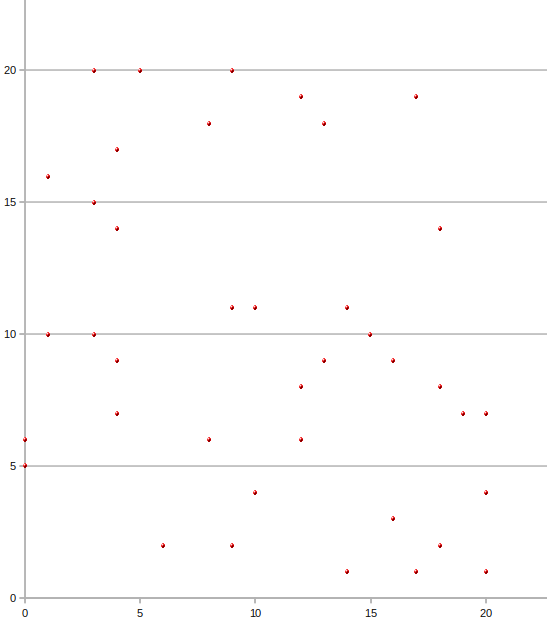
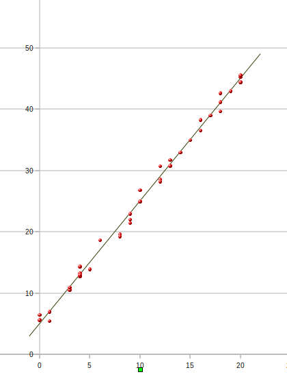
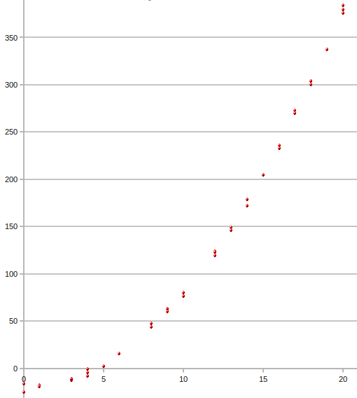
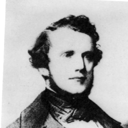

| Choisissez votre langue ! | Choose your language ! |
Régression
Regression
Le problème
Nous avons vu à la , ce que signifie des caractères indépendants.A l'opposé complet de cette notion se trouvent des caractères liés l'un à l'autre par une dépendance fonctionnelle, du type Y=f(X), c'est à dire si toute modalité yi se déduit d'une modalité xi par une application f : xi → yi.
Dans ce cas la connaissance de la série statistique X détermine entièrement la série Y, et si on représente la courbe y=f(x) les points du nuage viennent se placer sur le graphe de la fonction f.
Dans ce cas toujours la connaissance de la série Y n'apporte aucune information nouvelle par rapport à X.
Un des buts de la statistique est de trouver des relations entre les caractères. Ainsi les sociétés d'assurance, pour établir leurs contrats d'assurance-vie commence par dresser des tables liant l'espérance de vie restante, liée au sexe, à l'âge, aux habitudes de vie, au rapport taille-poids etc...
Quant on cherche une relation entre deux caractères numériques la première chose à faire est de représenter le nuage de points matérialisant ces deux caractères et de voir si les points semblent dessiner une courbe connue.
Ainsi dans les exemples ci-dessous, et dans le premier cas la répartition des points semble totalement aléatoire, dans le second cas, les points semblent s'aligner sur une droite, et dans le troisième cas les points semblent dessiner une parabole.
The problem
We saw at the , what it means independent variables.At the complete opposite of this notion are variables linked to each other by a functional dependence, of the type Y=f(X), i.e. if any modality yi is deduced from a modality xi by an application f: xi → yi.
In this case the knowledge of the statistical series X entirely determines the series Y, and if we represent the curve y=f(x) the points of the cloud are placed on the graph of the function f.
In this case the knowledge of the series Y does not bring any new information compared to X.
One of the purposes of statistics is to find relationships between variables. Thus insurance companies, to establish their life insurance contracts, begin by drawing up tables linking the remaining life expectancy, linked to sex, age, lifestyle, height-weight ratio, etc. ..
When looking for a relationship between two numeric variables, the first thing to do is to represent the cloud of points materializing these two variables and to see if the points seem to draw a known curve.
Thus in the examples below, and in the first case, the distribution of the points seems completely random, in the second case, the points seem to be aligned on a straight line, and in the third case the points seem to draw a parabola.



En fait le cas général n'est pas très différent car dire que Y est lié à X par une fonction du second degré du type ax2+b revient à dire qu'il y a une relation linéaire entre les caractères X et Y=X2.
La méthode des moindres carrés
Nous cherchons à résoudre le problème suivant :Etant donné un nuage Mi(xi,yi) et une droite D d'équation y=ax+b, nous posons
\( \displaystyle \Sigma = {\sum\limits_{i = 1}^{n}\left( y_{i} - ax_{i} - b \right)^{2}} \)
Nous cherchons la droite D qui minimise Σ.In fact the general case is not very different because to say that Y is linked to X by a quadratic function of the type ax2+b amounts to saying that there is a linear relation between the variables X and Y=X2.
The method of least squares
We are looking to resolve the following issue:Given a cloud Mi(xi,yi) and a line D with equation y=ax+b, we set
\( \displaystyle \Sigma = {\sum\limits_{i = 1}^{n}\left( y_{i} - ax_{i} - b \right)^{2}} \)
We are looking for the line D which minimizes Σ.Nous l'appelons la 'droite de régression' de Y en X (ou de Y sur X).
We call it the 'regression line' from Y to X (or from Y to X).
A ce stade nous n'avons pas encore étudié les extrema des fonctions de deux variables, cependant, considérons à a fixé la fonction d'une seule variable b → φ(a,b).
On se place dans l'hypothèse où la variance de X est non nulle.
Son minimum correspond à une annulation de la dérivée de cette fonction partielle. Cette dérivée se note traditionnellement
\( \displaystyle \frac{\partial\varphi}{\partial b} \)
Elle se calcule facilement comme une dérivée d'une fonction d'une seule variable a étant considéré comme une constante.\( \displaystyle \frac{\partial\varphi}{\partial b}\left( {a,b} \right) = 0\left. \Leftrightarrow\overline{Y} = a\overline{X} + b \right. \)
Ce qui prouve au passage que la solution passe par le ..Il reste maintenant à trouver la valeur de a réalisant ce minimum.
Nous remplaçons pour cela b par son expression ci-dessus en fonction de a soit
\( \displaystyle b = \overline{Y} - a\overline{X} \)
pour avoir une fonction d'une seule variable a, dont nous cherchons le minimum.Nous avons alors
\( \displaystyle \frac{{\partial \varphi}\left( {a,b(a)} \right)}{\partial a} = - \frac{2}{n}{\sum\limits_{i = 1}^{n}\left( x_{i} - \overline{X} \right)\left( \left( y_{i} - \overline{Y} \right) - a\left( x_{i} - \overline{X} \right) \right)} \)
de sorte que l'annulation se produit pour\( \displaystyle a = \frac{{Cov}\left( {X,Y} \right)}{{Var}(X)} \)
At this stage we have not yet studied the extrema of functions of two variables, however, let us consider at a fixed the function of a single variable b → φ(a,b).
We assume that the variance of X is non-zero.
Its minimum corresponds to a cancellation of the derivative of this partial function. This derivative is traditionally noted
\( \displaystyle \frac{\partial\varphi}{\partial b} \)
It is easily calculated as a derivative of a function of a single variable a being considered as a constant.\( \displaystyle \frac{\partial\varphi}{\partial b}\left( {a,b} \right) = 0\left. \Leftrightarrow\overline{Y} = a\overline{X} + b \right. \)
Which proves in passing that the solution goes through the ..It now remains to find the value realizing this minimum.
For this, we replace b by its expression above as a function of a, i.e.
\( \displaystyle b = \overline{Y} - a\overline{X} \)
to have a function of a single variable a, of which we are looking for the minimum.We then have
\( \displaystyle \frac{{\partial \varphi}\left( {a,b(a)} \right)}{\partial a} = - \frac{2}{n}{\sum\limits_{i = 1 }^{n}\left( x_{i} - \overline{X} \right)\left( \left( y_{i} - \overline{Y} \right) - a\left( x_{i} - \overline{X} \right) \right)} \)
so that the cancellation occurs for\( \displaystyle a = \frac{{Cov}\left( {X,Y} \right)}{{Var}(X)} \)
Nous avons également représenté le point moyen en rouge, ainsi que la droite de régression R de Y en X (couleur rouge).
Vous voyez également une droite variale D d'équation y=ax+b.
Vous pouvez avec les curseurs faire varier la pente a de D ainsi que son ordonnée à l'origine b.
Lorsque vous faites varier a et b vous voyez s'afficher le nombre Σ
\( \displaystyle \Sigma = {\sum\limits_{i = 1}^{n}\left( y_{i} - ax_{i} - b \right)^{2}} \)
Observez que le minimum de Σ est bien atteint quand D=R.Pour cela donner d'abord à a la valeur correspondant au parallélisme de D avec R, puis faites varier b jusqu'à ce que les deux droites coïncident.
We have also represented the mean point in red, as well as the regression line R from Y to X (red color).
You also see a variable line D with equation y=ax+b.
You can use the cursors to vary the slope a of D as well as its ordinate at the origin b.
When you vary a and b you see the number Σ
\( \displaystyle \Sigma = {\sum\limits_{i = 1}^{n}\left( y_{i} - ax_{i} - b \right)^{2}} \)
Observe that the minimum of Σ is achieved when D=R.To do this, first give a the correct value for parallelism with R, then vary b until the two lines coincide.
\( \displaystyle \frac{{Cov}\left( {X,Y} \right)}{{Var}(Y)} \)
Par contre les deux droites passent par le point moyen.Le terme régression a une origine curieuse. Il remonte à l’étude du physiologiste et anthropologue Sir Francis Galton (voir photo ci-dessous) sur la relation entre la taille des parents et celle des enfants. Galton était un cousin de Charles Darwin. Il observa que les enfants de parents courts de taille, lorsqu’ils étaient rendus à l’âge adulte, avaient tendance à être de petite taille eux aussi, mais pas autant que leurs parents. Ils avaient plutôt une taille les rapprochant de la moyenne de la population. Il en était de même des enfants de parents de grande taille: leurs enfants semblaient régresser vers la moyenne (dans le sens de “retourner vers un état antérieur”), comme semblait le montrer le diagramme de dispersion. Galton appela “rapport de régression filiale” la pente de la relation graphique linéaire entre la taille des parents et celle des enfants.
(d'après Pierre Legendre & Daniel Borcard, Université de Montréal)
Coefficient de regression linéaire
Par application du paragraphe précédent on peut toujours, si la variance de X n'est pas nulle , tracer la droite de régression de Y en X.Le problème est de savoir si ce tradé a un sens.
Ce tracé a un sens chaque fois que les points du nuage semblent alignés.
Mais ici nous nous fions seulement à une impression visuelle. Le but est maintenant de remplacer cela par une estimation plus rigoureuse.
Les principaux contributeurs de cette théorie sont les messieurs dont les portraits suivent.
\( \displaystyle \frac{{Cov}\left( {X,Y} \right)}{{Var}(Y)} \)
On the other hand, the two straight lines pass through the middle point.The term regression has a curious origin. It dates back to the study of physiologist and anthropologist Sir Francis Galton (see photo below) on the relationship between the height of the parents and that of the children. Galton was a cousin of Charles Darwin. He observed that the children of parents short of height, when they reached adulthood, tended to be small in size too, but not as much as their parents. Rather they had a size bringing them closer to the average of the population. It was about the same for children of tall parents: their children seemed regress towards the mean (in the sense of “returning to an anterior state”), as the scatter plot seemed to show. Galton called the "filial regression ratio" the slope of the relationship line graph between parent height and child height.
(after Pierre Legendre & Daniel Borcard, University of Montreal)
Linear regression coefficient
By applying the previous paragraph we can always, if the variance of X is not zero, draw the regression line from Y to X.The problem is whether this operation makes sense.
This is making sense whenever the points on the cloud appear rather aligned.
But here we rely only on a visual impression. The goal now is to replace that with a more rigorous estimate.
The main contributors to this theory are the gentlemen whose portraits follow.
| Francis Galton (1822-1911/UK) | Auguste Bravais (1811-1863)/FR) | Karl Pearson (1857-1927/UK) |
|  |
On appelle 'coefficient de corrélation linéaire de X et Y' (de Bravais-Pearson) le nombre :
\( \displaystyle r\left( {X,Y} \right) = \frac{{Cov}(X,Y)}{\sigma(X)\sigma(Y)} \)
We call 'linear correlation coefficient of X and Y' (Bravais-Pearson) the number:
\( \displaystyle r\left( {X,Y} \right) = \frac{{Cov}(X,Y)}{\sigma(X)\sigma(Y)} \)
\( \displaystyle \overrightarrow{U} = \begin{pmatrix} {x_{1} - \overline{X}} \\ {x_{2} - \overline{X}} \\ {...} \\ {x_{n} - \overline{X}} \end{pmatrix} \)
et\( \displaystyle \overrightarrow{V} = \begin{pmatrix} {y_{1} - \overline{Y}} \\ {y_{2} - \overline{Y}} \\ {...} \\ {y_{n} - \overline{Y}} \end{pmatrix} \)
\( \displaystyle \overrightarrow{U} = \begin{pmatrix} {x_{1} - \overline{X}} \\ {x_{2} - \overline{X}} \\ {...} \\ {x_{n} - \overline{X}} \end{pmatrix} \)
and\( \displaystyle \overrightarrow{V} = \begin{pmatrix} {y_{1} - \overline{Y}} \\ {y_{2} - \overline{Y}} \\ {...} \\ {y_{n} - \overline{Y}} \end{pmatrix} \)
\( \displaystyle r\left( {X,Y} \right) = \frac{\overset{\rightarrow}{U} . \overset{\rightarrow}{V}}{\parallel \overset{\rightarrow}{U} \parallel {\parallel \overset{\rightarrow}{V} \parallel}} \)
C'est donc d'après un nombre dans l'intervalle [-1,+1] correspondant à un cosinus d'un angle de deux vecteurs dans l'espace ℝn.\( \displaystyle r\left( {X,Y} \right) = \frac{\overset{\rightarrow}{U} . \overset{\rightarrow}{V}}{\parallel \overset{\rightarrow}{U} \parallel {\parallel \overset{\rightarrow}{V} \parallel}} \)
It is therefore according to a number in the interval [-1,+1] corresponding to a cosine of an angle of two vectors in ℝn.Interprétation
- Dire que r(X,Y)=1 correspond à
\( \displaystyle \widehat{\left (\overrightarrow{U},\overrightarrow{V} \right )}=0 ~~ mod(2\pi ) \)
donc il existe un coefficient de proportionnalité positif k tel que
\( \displaystyle \overrightarrow{V}=k\overrightarrow{U} \)
.
De là nous tirons \( \displaystyle \overrightarrow{Y} = k\overrightarrow{X} + \left( \overline{Y} - k\overline{X} \right)\overrightarrow{I} \) où \( \displaystyle \overrightarrow{I} \) est le vecteur ayant toutes ses composantes égales à 1.
Posant \( \displaystyle h = \overline{Y} - k\overline{X} \) on a bien Y=kX+h avec k > 0. - Si r(X,Y)=-1 \( \displaystyle \widehat{\left (\overrightarrow{U},\overrightarrow{V} \right )}=\pi ~~ mod(2\pi ) \) on arrive donc à la même conclusion que ci-dessus mais avec k < 0.
- Enfin si X et Y sont indépendantes on a bien r(X,Y)=0, la réciproque étant fausse, comme on l'a vu précédemment.
Interpretation
- Say that r(X,Y)=1 corresponds to
\( \displaystyle \widehat{\left (\overrightarrow{U},\overrightarrow{V} \right )}=0 ~~ mod(2\pi ) \)
so there is a positive proportionality coefficient k such that
\( \displaystyle \overrightarrow{V}=k\overrightarrow{U} \)
.
From there we derive \( \displaystyle \overrightarrow{Y} = k\overrightarrow{X} + \left( \overline{Y} - k\overline{X} \right)\overrightarrow{I} \) Or \( \displaystyle \overrightarrow{I} \) is the vector having all its components equal to 1.
Setting \( \displaystyle h = \overline{Y} - k\overline{X} \) we have Y=kX+h with k > 0. - If r(X,Y)=-1 \( \displaystyle \widehat{\left (\overrightarrow{U},\overrightarrow{V} \right )}=\pi ~~ mod(2\pi ) \) we therefore arrive at the same conclusion as above but with k < 0.
- Finally, if X and Y are independent, we have r(X,Y)=0, the reciprocal being false, as we saw previously.
Le coin de Python
Python's Corner
Le coin de Julia
Julia's corner
|
Création Gilles Dubois - licence CC-BY-SA
Created by Gilles Dubois - licence CC-BY-SA
|
Septembre 2023
September 2023
|
Version mobile Jquery
Mobile Jquery version
|
|